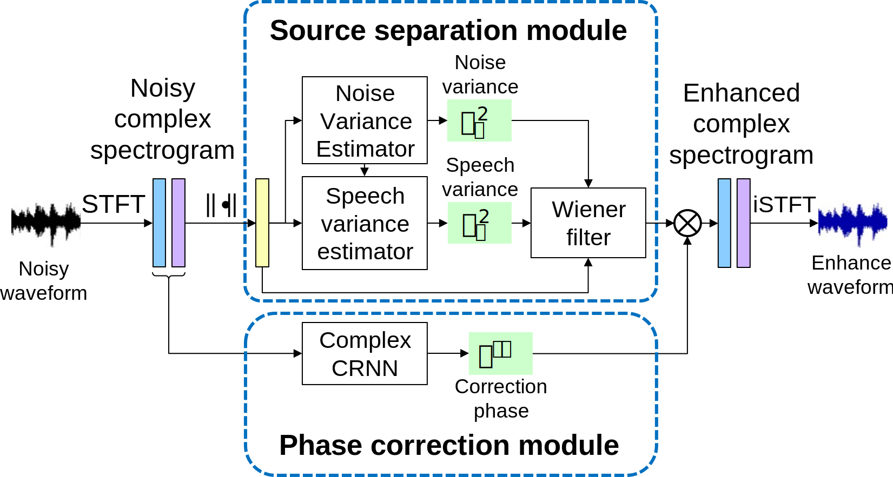

Single-channel speech enhancement with noise-robust Vector-quantized Variational Autoencoder
Tuan Vu Ho, Quoc Huy Nguyen, Masato Akagi, and Masashi Unoki Japan Advanced Institute of Science and Technology
Contact: tuanvu.ho@jaist.ac.jp
Abstract
Recent speech enhancement methods based on complex ideal ratio mask (cIRM) have achieved promising results. To estimate the cIRM, these methods often focus on the time-domain constraints such as scale-invariant signal-to-distortion ratio (SI-SDR) without considering the time-frequency domain, which contains important harmonic structure information. This paper proposed a speech enhancement methods based on the noise-robust Vector-quantized Variational Autoencoder model, in which both constraints for time-domain and time-frequency domain are taken into account. In particular, the Itakura-Saito divergence, which closely related to the perceptual similarity between two spectrum, is applied for the time-frequency domain. On the other hand, the SI-SDR metric is employed for time-domain constraint.Tto give direct comparison with other speech enhancement studies, the proposed model is evaluated on the open Voice Bank+DEMAND database. The experimental results indicate that the proposed method can achieve the PESQ score of 2.85 and STOI score of 0.94, which is better than the strong baseline deep-complex convolution recurrent network (DCCRN+) trained on the same database.

Figure 1: Overview of the proposed CVQ speech enhancement.